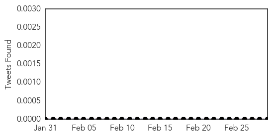
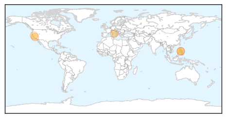
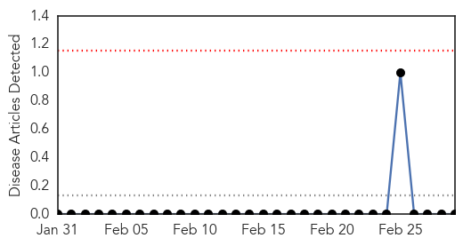

Measles
30-Day Web Trend
2 alerts, 0 warnings

30-Day Twitter Trend
0 alerts, 0 warnings

Article Locations
Article Confidences
Top Articles:
- 0.985
- Measles outbreak reported on Costa Pacifica cruise ship , dozens affected
- 0.966
- Two relatives of infected UC Berkeley student have measles, health officials say
- 0.930
- Two relatives of UC Berkeley student who contracted measles have come down with the disease
- 0.852
- Health outbreaks not linked
- 0.842
- California health officials
Top Tweets:
-
No tweets found for Mar 01, 2014
Bubonic Plague
30-Day Web Trend
0 alerts, 0 warnings

30-Day Twitter Trend
0 alerts, 0 warnings

Article Locations

Article Confidences

Top Articles:
-
No articles found for Mar 01, 2014
Top Tweets:
-
No tweets found for Mar 01, 2014